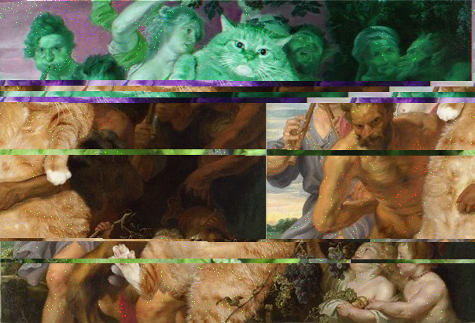

🏡
👩
📷
Work
Anaglyph
This is an image fron "Demon Slayer" and the character is Tomioka Giyuu. Inspired by the love for this managa.

Glitch Art of "Botticelli, The Birth of Venus"
"Botticelli, The Birth of Venus" is from the artsit Fatcat Art. I'm always a cat lover and the art this aritst made is fun and joyfuly, so I decided to made a glitch art out of it.
Joker Collage
I'm a Joker movie fans. I combined the three different Joker in three different movies in one single scene. This scene is from the movie 'Joker 2019'. The other two Jokers are from 'Suicide Squad'and "Dark Knigh Rises".
Fushimi Inari-taisha
A 3D views that I created of the "Fushimi Inari-taisha", I never been to this temple, but I wished someday I can visit it. Created with Mixmeshers and effects with sketchfab. Click the title to view the model and more details.
Your browser does not support the video tag.
Highlight of My
A 3D views that I created of the "Fushimi Inari-taisha", I never been to this temple, but I wished someday I can visit it. Created with Mixmeshers and effects with sketchfab. Click the title to view the model and more details.